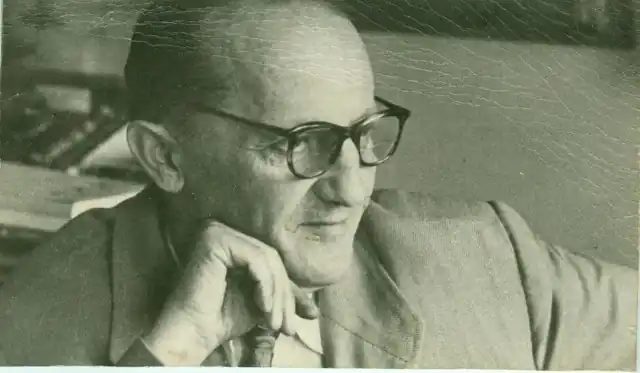
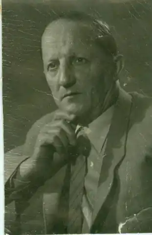

Семен Дмитрович Скляренко народився 26 вересня 1901 року в селі Прохорівці на Черкащині, в родині зубожілого селянина. Навчався в місцевій школі, потім — у Золотоніській гімназії. Уже в той час він багато читав, захоплювався літературою. A пізніше й сам почав писати: 1919 року в місцевій газеті "Голос труда" було надруковано його перший твір — вірш "Гімн праці".
Дід Семена Скляренка, також Семен, все життя прожив у Прохорівці Канівського району. Він – потомствений козак Прохорівської козацької сотні. З дружиною мали двох синів – Дмитра і Афанасія. Але вік Семена Скляренка був недовгим – в одному з кулачних боїв, які у ті часи були в моді, він загинув. Вдова вийшла заміж удруге – за місцевого козака Степана Негрея і народила йому ще чотирьох синів. Після смерті вітчима найстарший із синів Дмитро був за головного, рано пішов працювати матросом на річковий пароплав, згодом став на кораблі стерновим. Одруження у цій ситуації довелося відкласти – з 18-річною Євдокією побрався лише у 32 роки. Євдокія Стоянова була з роду збіднілих дворян. Дівчина закінчила Золотоніську гімназію і мала диплом учителя. Але вчителювала лише два роки – народила п’ятьох дітей, отож усе життя була домогосподаркою. Молода невістка мусила жити в тісній хатині разом із свекрухою і п’ятьма ще неодруженими чоловіковими братами. Рятуючись від тісноти, у теплу пору року Євдокія плавала на кораблі по Дніпру разом з чоловіком-стерновим, який мав окрему каюту. Саме на кораблі "Ратмир", неподалік Кременчука, і народився Семен Скляренко. Хоча в документах місцем народження значиться село Прохорівка.
Коли у сім’ї було вже двоє дітей, Євдокія наполягла на тому, щоб чоловік покинув плавання. Дмитро влаштувався касиром на річкову пристань. Через два роки став начальником пристані і працював там до кінця життя. Помер Дмитро у 1919 році від тифу, залишивши Євдокію з чотирма дітьми (старший помер). На той час родина мала свій будинок, який недорого придбали у 1914 році у поміщика, який виїжджав за кордон. У спадок Скляренкам дісталося і піаніно. Семен Скляренко самотужки вивчився грати на цьому інструменті. Євдокія Федорівна добре знала українську, російську і навіть французьку та німецьку мови, багато читала. Діти Скляренків вважалися освіченою, прогресивною молоддю – всі вони закінчили Золотоніську гімназію. У перші роки радянської влади Семен організував у селі драмгурток, вів активну просвітницьку роботу. Перші вірші і нариси Семен Скляренко написав у гімназії, друкувався в пресі. Після закінчення гімназії наприкінці 1919 року юнак повертається до рідного села, працює бібліотекарем, учителює, водночас друкується в періодичній пресі. Його поезії, нариси, оповідання публікуються в київських газетах "Більшовик", "Селянська газета", альманасі "Вир революції". У Прохорівці доклав багато зусиль, щоб вберегти бібліотеку Михайла Максимовича, зберегти дуб Шевченка. Після армії працює відповідальним секретарем окружної газети "Радянська думка" в Черкасах (нині в цьому приміщенні – редакція газети "Черкаський край"). У 1927 році Скляренко переїздить до Києва, працює в республіканських газетах та журналах. Письменник написав багато оповідань, повістей, романів. У своїй творчості Семен Скляренко використовував матеріали з історії рідного краю, описував події, які відбувалися на Канівщині і в Прохорівці. Використовує у творах прізвища односельців: Давид Гурин, Мерега, Іван Стоян; назви кутків села, річечок: Оріховка, Коноплянка, Савранка, Видумка, Узвіз, Кумина Коса, Киселівка. З любов’ю описує Дніпро. Він і сам любив на човні мандрувати цієї величною рікою. Вершиною історичної тематики стали романи про період зміцнення і розквіту Київської Русі – "Святослав", "Володимир". На жаль, трилогію письменник не встиг написати – написано лише кілька глав третьої книги "Ярослав". У роки Другої світової війни Семен Скляренко був військовим кореспондентом, нагороджений орденами і медалями. У післявоєнні роки продовжував письменницьку працю. Іменем Семена Скляренка названо вулиці в Києві та Прохорівці, гімназію та вулицю у Золотонші. Теплохід "Семен Скляренко" курсував Дніпром. На жаль, нині його не видно...